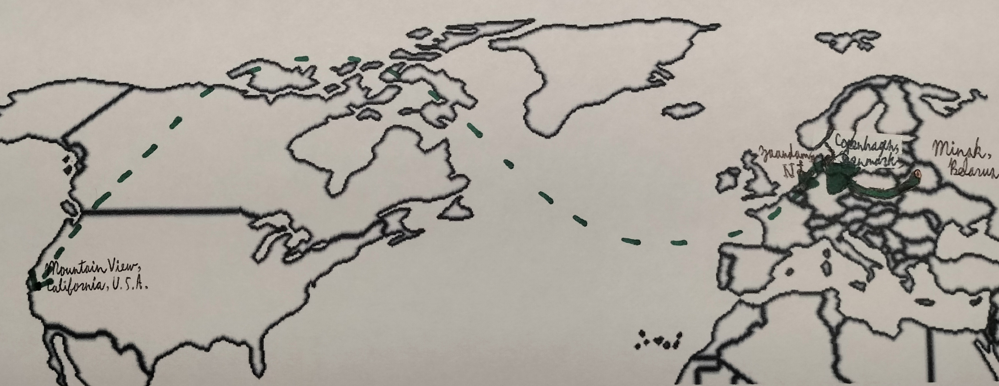

We do these things not because they are easy, but because we thought they would be easy.

Charlottenlund -> Zaandam -> California]" />My path here was a meandering one. When I was less than a year old, I moved from Minsk, Belarus to Charlottenlund, Denmark. Then again, when I was barely two, from Denmark to Zaandam in the Netherlands. At the age of four, my family at last moved out to northern California – I actually lived there for a whole seven years before finally making my way to San Diego and Carlsbad. And I'm glad CCA has been my high-school destination so far. Fun fact: in my move south, I had gone to elementary school, then to middle school, then to elementary school, then to middle school again in the span of two years.Frankly, I'm not so clear-cut on what it is that I do. It was once most definitely game development and writing code, but my time taking assorted AP classes at this school has led me to become something of a "devoted dilettante" to the sciences. But I don't limit myself to a field even as broad as that. I study the Japanese language and its characters (more on that later). Sometimes I experiment with electronics and engineering…one way of looking at it: in a time that demands specialization, I'm a chronic generalist; another: in a time of great uncertainty, I remain flexible and adaptable. Perhaps it's a matter of perspective.
I'd say my most thematic journey here at CCA was quite unplanned. I signed up for Japanese classes just because I found the language itself to be linguistically satisfying. So, I planned on taking one class per year, finishing with Japanese 4 in the senior year, and take a spaced-out approach to simply passing my world language requirements. Instead, I ended up making several very good friends and taking all four classes in my first four semesters – and I'm still planning on taking two more atop that next year. This year, meanwhile, myself and two project partners have formed the Kanjingle Development Club, where we build a gamified system for learning Chinese/Japanese characters.